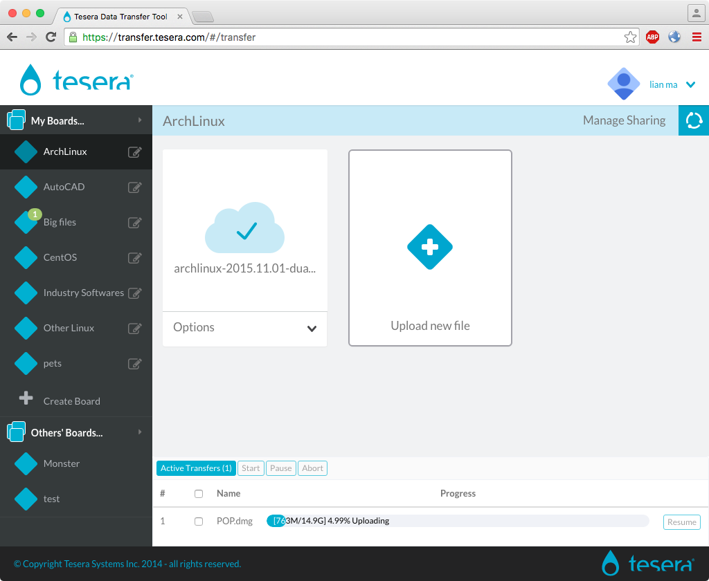
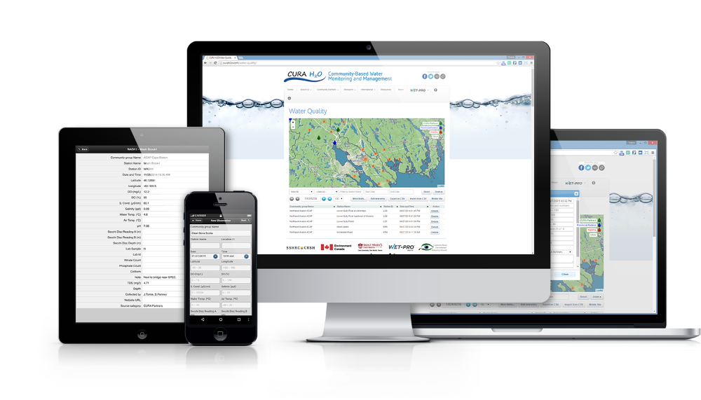
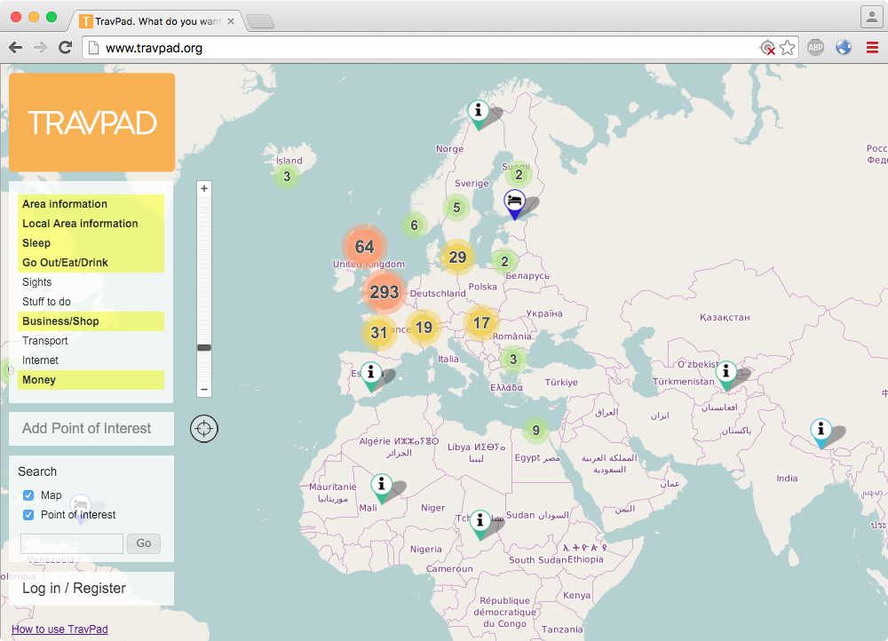
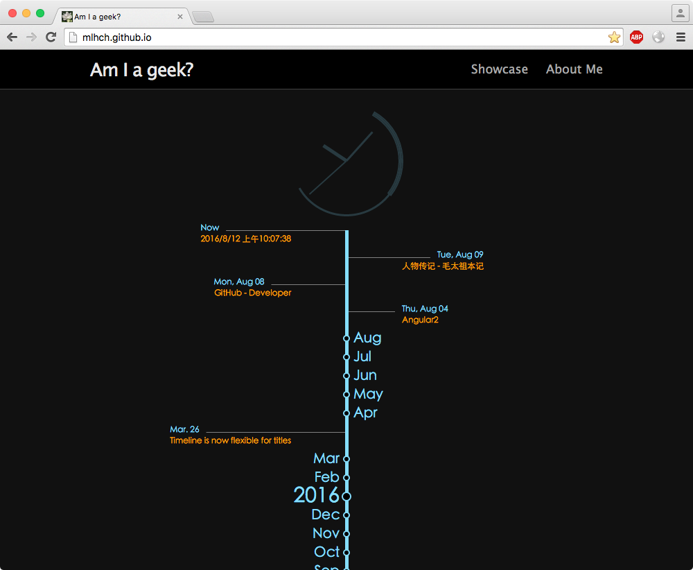
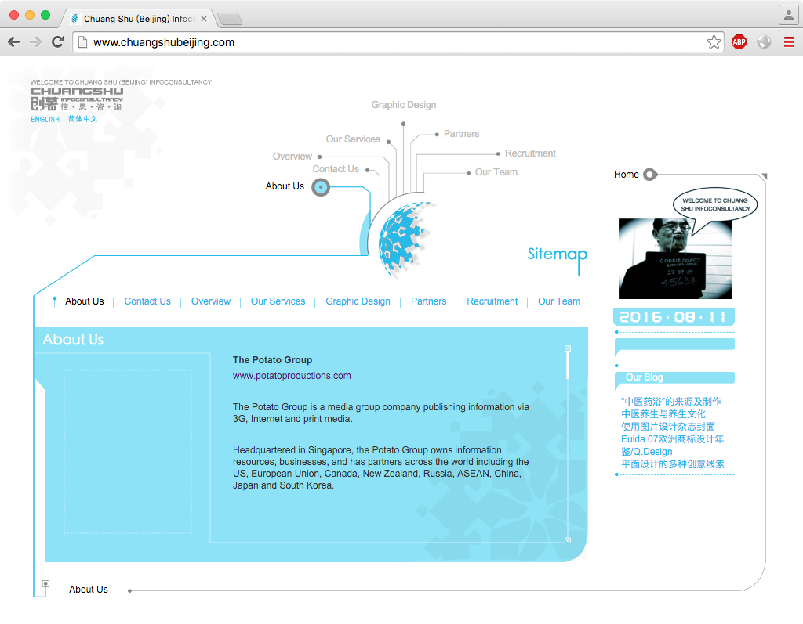

Live: https://transfer.tesera.com/

Live: http://cbemn.ca/water-quality/
Live: http://cbemn.ca/m/water-quality/
CURA H20’s web/mobile application provides an easy to use platform to integrate watershed data collected by communities into management decisions and improved environmental outcomes. “The CURA H2O tool has been adopted by watershed partners across Canada’s Atlantic provinces, as well as communities in Nepal, Nigeria and Gambia.” — Oliver Woods, CURA H2O / Wet-Pro Liaison, Saint Mary’s University
The Community-University Research Alliance (CURA H2O) needed a web-based solution to enable citizen science and engage stakeholders in monitoring the health of local watersheds and share water quality data on a global basis.
The CURA H2O solution was designed for a diverse cross-section of user groups. Simplicity in the design and user interface was critical to the successful adoption of the app by communities and users globally.
The result is an intuitive web app that allows the CURA H2O team to manage and share standardized water quality data collected by stewardship partners across Atlantic Canada and internationally.

Live: http://www.travpad.org
Travpad is the local map-based travel guide. Crowdsourced guide, made by locals and travellers. Just like you.

And, the mobile version:
Live: http://mobile.travpad.org
It’s simple, totally hosted by Github, including the front-end D3js timeline/clock and back-end articles repo, which looks messy, but has many branches, each branch is associated with an article and its history.
The articles not all from my local version. I’ll filter those suitable and update them little by little in the coming future.

Live: http://www.chuangshubeijing.com/
